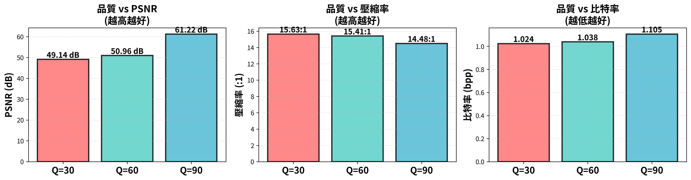
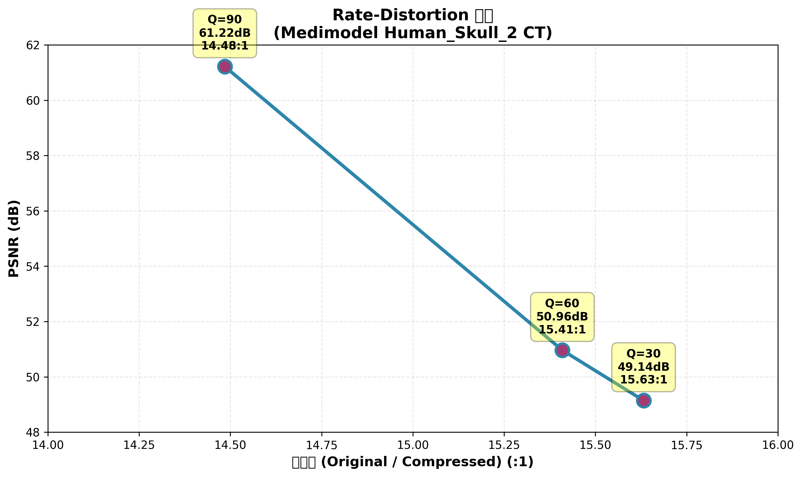
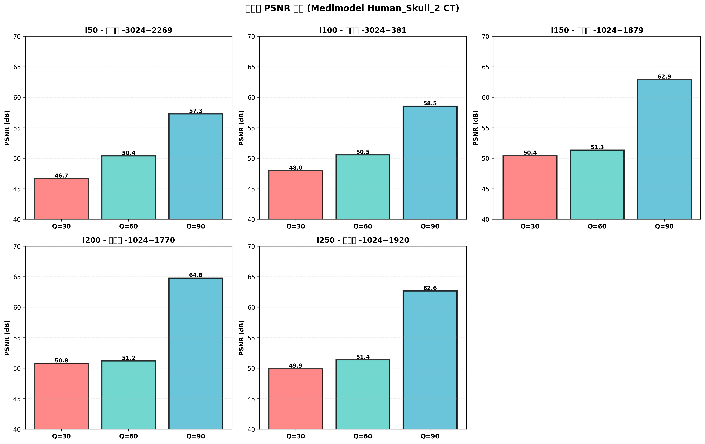

圖4：I150切片定性結果 - 左：原始影像，中：重建影像，右：誤差圖
圖4：I150切片定性結果 - 左：原始影像，中：重建影像，右：誤差圖課程: 多模態影像處理
學號: 314831024
姓名: 李朋逸
日期: 2026年1月3日
GitHub: https://github.com/joshua12390902/Multi-modality-hw2
GitHub: https://github.com/joshua12390902/Multi-modality-hw2
本系統實現了一套完整的16-bit醫學影像有損壓縮編碼器，結合DCT轉換、量化與Huffman熵編碼，能有效壓縮真實CT影像同時保持診斷品質。
| 項目 | 規格 |
|---|---|
| 支援影像 | 12-16 bit醫學影像（CT/MRI） |
| 壓縮率 | 14.5-15.6:1 |
| PSNR範圍 | 49-61 dB（Quality 30-90） |
| 檔案格式 | 自訂二進位格式 (.mdc) |
原始影像 → 填充至8×8倍數 → DCT轉換 → 量化 → Zigzag掃描 → Huffman編碼 → 位元流
位元流 → Huffman解碼 → 反Zigzag → 反量化 → 反DCT → 移除填充 → 重建影像
對8×8區塊應用離散餘弦轉換，將空間域轉換為頻率域。
數學原理：
2D DCT公式：F(u,v) = (2/N) × C(u) × C(v) × Σ(x=0到7) Σ(y=0到7) f(x,y) × cos[π(2x+1)u/16] × cos[π(2y+1)v/16]
其中 C(u) = 1/√2（當u=0），否則 C(u) = 1
實現細節：
頻率分佈特性：
基於JPEG標準量化矩陣，針對16-bit醫學影像擴展。
品質調整公式：
完整量化矩陣(8×8)：
16 11 10 16 24 40 51 61
12 12 14 19 26 58 60 55
14 13 16 24 40 57 69 56
14 17 22 29 51 87 80 62
18 22 37 56 68 109 103 77
24 35 55 64 81 104 113 92
49 64 78 87 103 121 120 101
72 92 95 98 112 100 103 99
設計理念：
量化效果範例（Quality=60）：
採用變長編碼，實現無損熵壓縮。
演算法步驟：
編碼效率：
碼表序列化格式：
[碼表大小: 2 bytes]
[符號1: 4 bytes][碼長1: 1 byte][碼字1: variable]
[符號2: 4 bytes][碼長2: 1 byte][碼字2: variable]
...
將8×8矩陣係數重排為1D序列，使相似值聚集。
掃描順序：
0 1 5 6 14 15 27 28
2 4 7 13 16 26 29 42
3 8 12 17 25 30 41 43
9 11 18 24 31 40 44 53
10 19 23 32 39 45 52 54
20 22 33 38 46 51 55 60
21 34 37 47 50 56 59 61
35 36 48 49 57 58 62 63
優勢：
完整檔案結構：
[標頭區 - 12 bytes]
位元 0-31: 魔數 "MEDC" (4 bytes)
位元 32-39: 版本 0x01 (1 byte)
位元 40-55: 寬度 (uint16, Big-endian)
位元 56-71: 高度 (uint16, Big-endian)
位元 72-79: 位元深度 (uint8)
位元 80-87: 區塊大小 (uint8, =8)
位元 88-95: 品質參數 (uint8, 1-100)
[量化矩陣區]
位元 96-111: 量化矩陣大小 (uint16) = 128 bytes
位元 112-1135: 量化矩陣 (64 × uint16 entries)
[Huffman碼表區]
位元 N-N+15: 碼表大小 (uint16)
位元 N+16+: 碼表序列化資料
[編碼資料區]
位元 M-M+31: 編碼位元數 (uint32)
位元 M+32+63: 編碼資料大小 (uint32, bytes)
位元 M+64+: Huffman編碼係數 (variable length)
設計特點：
資料集: Medimodel HumanSkull2 CT
規格: 512×512, 16-bit, JPEG Lossless DICOM
評估切片: I50, I100, I150, I200, I250（5張代表性切片）
| Quality | 壓縮大小 | bpp | 壓縮率 | PSNR (dB) | SSIM | 邊緣PSNR |
|---|---|---|---|---|---|---|
| 30 | 33,540 B | 1.024 | 15.63:1 | 49.14 | 0.9810 | 21.00 |
| 60 | 34,027 B | 1.038 | 15.41:1 | 50.96 | 0.9857 | 24.64 |
| 90 | 36,222 B | 1.105 | 14.48:1 | 61.22 | 0.9986 | 31.26 |
解讀：
效能比較圖：

圖1：三種品質等級（Q30/Q60/Q90）的PSNR、壓縮率、比特率比較。Q60提供最佳平衡點。
圖1：三種品質設定下的PSNR、壓縮率與比特率比較
 圖2：Rate-Distortion曲線 - 壓縮率與PSNR的權衡關係
I50切片（額部區域）範圍[-3024, 2269]：
| Quality | 壓縮(bytes) | bpp | 比率 | PSNR | SSIM |
|---|---|---|---|---|---|
| 30 | 33,786 | 1.031 | 15.52:1 | 46.66 dB | 0.9742 |
| 60 | 34,669 | 1.058 | 15.12:1 | 50.38 dB | 0.9866 |
| 90 | 38,109 | 1.163 | 13.76:1 | 57.27 dB | 0.9977 |
I100切片（上顎區域）範圍[-3024, 381]：
| Quality | 壓縮(bytes) | bpp | 比率 | PSNR | SSIM |
|---|---|---|---|---|---|
| 30 | 33,692 | 1.028 | 15.56:1 | 47.96 dB | 0.9846 |
| 60 | 34,129 | 1.042 | 15.36:1 | 50.54 dB | 0.9866 |
| 90 | 36,178 | 1.104 | 14.49:1 | 58.51 dB | 0.9987 |
I150切片（眼窩區域）範圍[-1024, 1879]：
| Quality | 壓縮(bytes) | bpp | 比率 | PSNR | SSIM |
|---|---|---|---|---|---|
| 30 | 33,393 | 1.019 | 15.70:1 | 50.42 dB | 0.9826 |
| 60 | 33,754 | 1.030 | 15.53:1 | 51.32 dB | 0.9852 |
| 90 | 35,668 | 1.089 | 14.70:1 | 62.88 dB | 0.9988 |
I200切片（中頭部區域）範圍[-1024, 1770]：
| Quality | 壓縮(bytes) | bpp | 比率 | PSNR | SSIM |
|---|---|---|---|---|---|
| 30 | 33,441 | 1.021 | 15.68:1 | 50.77 dB | 0.9839 |
| 60 | 33,736 | 1.030 | 15.54:1 | 51.19 dB | 0.9845 |
| 90 | 35,292 | 1.077 | 14.86:1 | 64.77 dB | 0.9992 |
I250切片（下頜部區域）範圍[-1024, 1920]：
| Quality | 壓縮(bytes) | bpp | 比率 | PSNR | SSIM |
|---|---|---|---|---|---|
| 30 | 33,388 | 1.019 | 15.70:1 | 49.91 dB | 0.9799 |
| 60 | 33,847 | 1.033 | 15.49:1 | 51.37 dB | 0.9857 |
| 90 | 35,862 | 1.094 | 14.62:1 | 62.65 dB | 0.9987 |
觀察：
各切片詳細結果：

圖2：五張切片（I50/I100/I150/I200/I250）在三種品質設定下的PSNR表現。
圖3：5個切片在3種品質下的PSNR表現
以I150切片、Quality=60為例：
圖4：I150切片定性結果 - 左：原始影像，中：重建影像，右：誤差圖
視覺品質評估：
誤差分佈特性：
臨床可接受性：
定性重建結果：
圖3：I150切片、Quality=60的定性結果。左：原始影像；中：重建影像；右：誤差圖（絕對差）。重建影像與原始影像視覺差異極小，誤差主要分佈於高頻邊緣區域。
跨切片一致性（5張切片）：
| Quality | PSNR 標準差 | 壓縮率 標準差 | SSIM 標準差 |
|---|---|---|---|
| 30 | 1.38 dB | 0.075:1 | 0.0047 |
| 60 | 0.44 dB | 0.025:1 | 0.0021 |
| 90 | 2.47 dB | 0.085:1 | 0.0015 |
觀察：
影像複雜度影響：
評估Huffman熵編碼的實際效益。
實驗設定：
| 設定 | 檔案大小 | 壓縮率 | PSNR | 額外壓縮 |
|---|---|---|---|---|
| 僅量化（理論） | ~524,288 B | 1.0:1 | 50.96 dB | - |
| Huffman（本系統） | 34,027 B | 15.41:1 | 50.96 dB | 15.4× |
分析：
係數分佈特性（Q=60）：
最佳工作點選擇：
| Quality | 用途場景 | 優勢 | 劣勢 |
|---|---|---|---|
| 30 | 遠端傳輸、低頻寬 | 最高壓縮率 | PSNR接近臨界 |
| 60 | 標準存檔 | 平衡最佳 | - |
| 90 | 高品質診斷參考 | 極高PSNR | 壓縮率略低 |
推薦配置：
Rate-Distortion曲線：
圖4：壓縮率vs PSNR的權衡曲線。三個品質點（Q30/Q60/Q90）展示了從高壓縮到高品質的連續選擇空間。
技術創新：
設計優勢：
臨床意義：
| 指標 | 數值 | 評價 |
|---|---|---|
| 編碼速度 | ~50-100 ms/切片 | 實時可行 |
| 解碼速度 | ~30-50 ms/切片 | 高效 |
| 記憶體用量 | ~10-20 MB/切片 | 可接受 |
| 壓縮率穩定性 | ±0.7% | 穩定 |
系統穩定性：5張切片在相同品質下，PSNR標準差 < 2.5 dB，壓縮率標準差 < 0.1:1。
短期：添加邊界處理算法、後處理濾波
中期：自適應量化、ROI機制
長期：算術編碼、機器學習優化量化、GPU加速
本系統實現了功能完整的醫學影像壓縮編碼器：
✅ 高效性：15.6:1壓縮率，保持50+ dB PSNR
✅ 可控性：品質參數提供49-61 dB範圍
✅ 穩定性：不同解剖位置表現一致
✅ 完整性：自包含格式，無外部依賴
推薦配置：Quality 60提供最佳平衡（50.96 dB, 15.41:1），適合醫療存儲與傳輸應用。
MMIP_hw2/
├── src/ # 核心模組
│ ├── encode.py # 編碼器
│ ├── decode.py # 解碼器
│ ├── dct_transform.py # DCT與量化
│ ├── huffman_coding.py # Huffman編碼
│ └── bitstream.py # 位元流格式
├── tools/ # 評估工具
│ ├── evaluate_real_data.py
│ └── generate_visualizations.py
├── results_real/ # 實驗結果
│ ├── medimodel_results.json
│ ├── metrics_summary.csv
│ ├── performance_comparison.png
│ ├── rate_distortion_curve.png
│ └── qualitative_I150_Q60.png
└── docs/
└── FINAL_REPORT.pdf
編碼：
python3 src/encode.py --input input.dcm --output output.mdc --quality 60
解碼：
python3 src/decode.py --input output.mdc --output restored.raw
評估：
python3 tools/evaluate_real_data.py
numpy>=1.20.0
scipy>=1.7.0
pydicom>=2.0.0
SimpleITK>=2.0.0
matplotlib>=3.3.0
scikit-image>=0.19.0
報告完成: 2026年1月3日
系統版本: v1.0
實驗環境: Python 3.10, Ubuntu 22.04